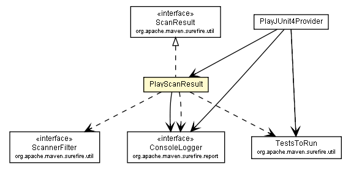

com.google.code.play.surefire.junit4
Class PlayScanResult

java.lang.Object
 com.google.code.play.surefire.junit4.PlayScanResult
com.google.code.play.surefire.junit4.PlayScanResult
- All Implemented Interfaces:
- ScanResult
public class PlayScanResult
- extends Object
- implements ScanResult
| Methods inherited from class java.lang.Object |
clone, equals, finalize, getClass, hashCode, notify, notifyAll, toString, wait, wait, wait |
PlayScanResult
public PlayScanResult(List<String> files,
ConsoleLogger consoleLogger)
size
public int size()
- Specified by:
size in interface ScanResult
getClassName
public String getClassName(int index)
- Specified by:
getClassName in interface ScanResult
writeTo
public void writeTo(Properties properties)
- Specified by:
writeTo in interface ScanResult
from
public static PlayScanResult from(Properties properties,
ConsoleLogger consoleLogger)
isEmpty
public boolean isEmpty()
getFiles
public List<String> getFiles()
applyFilter
public TestsToRun applyFilter(ScannerFilter scannerFilter,
ClassLoader testClassLoader)
- Specified by:
applyFilter in interface ScanResult
getClassesSkippedByValidation
public List<Class<?>> getClassesSkippedByValidation(ScannerFilter scannerFilter,
ClassLoader testClassLoader)
- Specified by:
getClassesSkippedByValidation in interface ScanResult
Copyright © 2010-2013. All Rights Reserved.